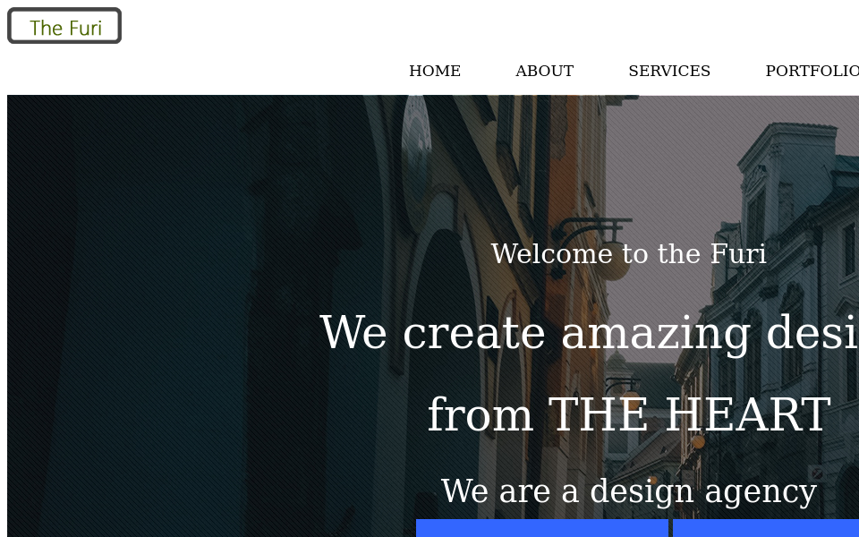
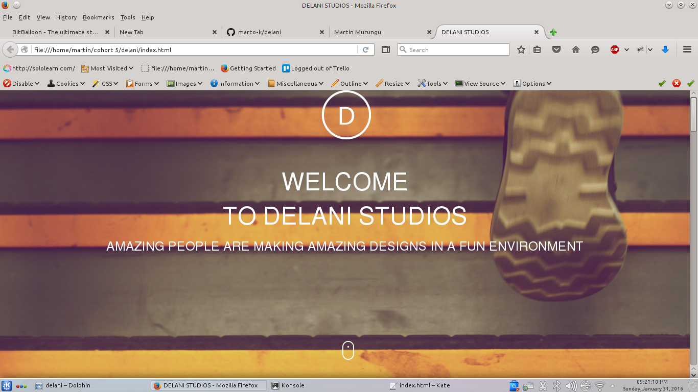
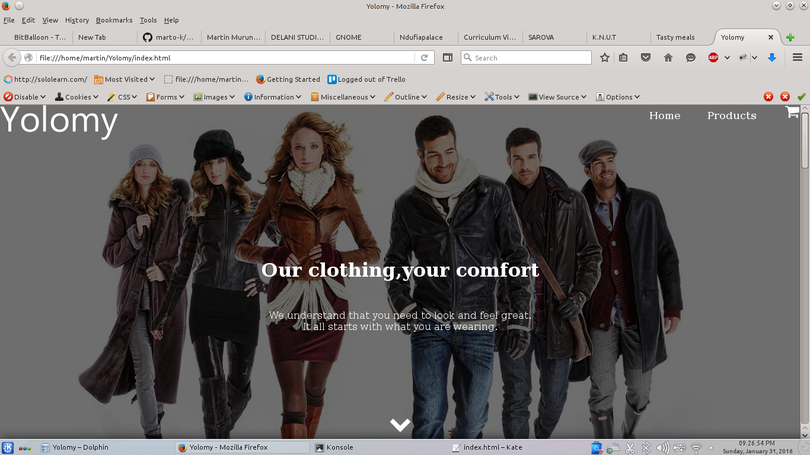
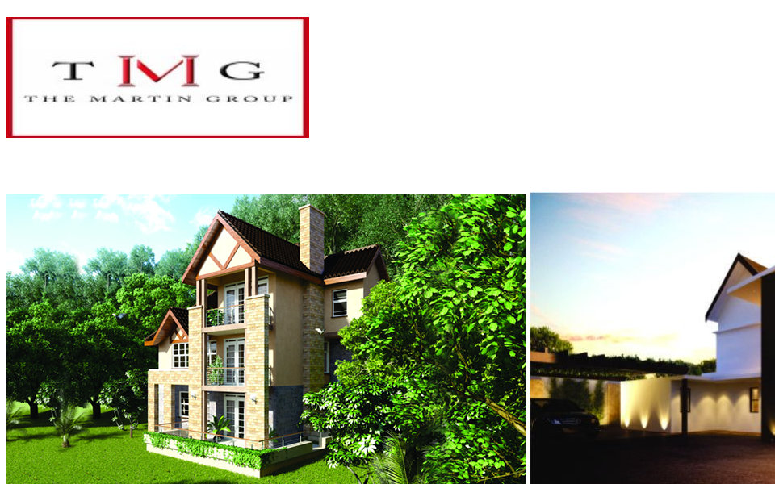
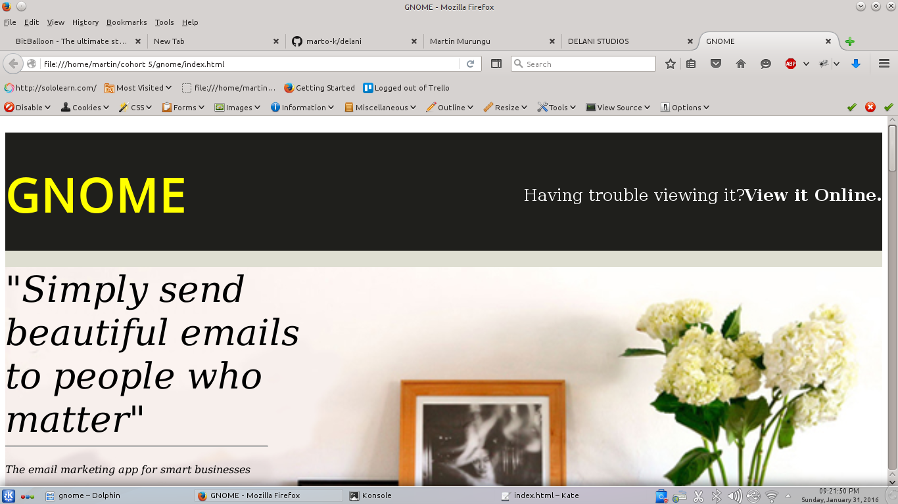
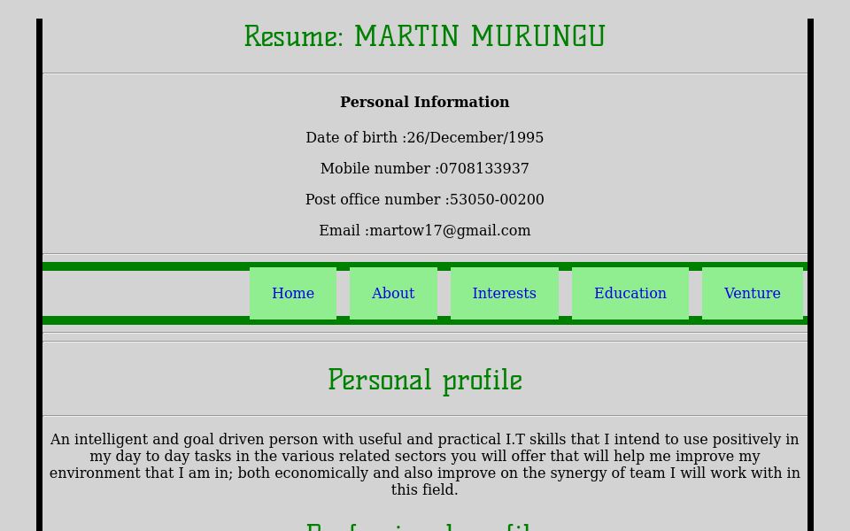
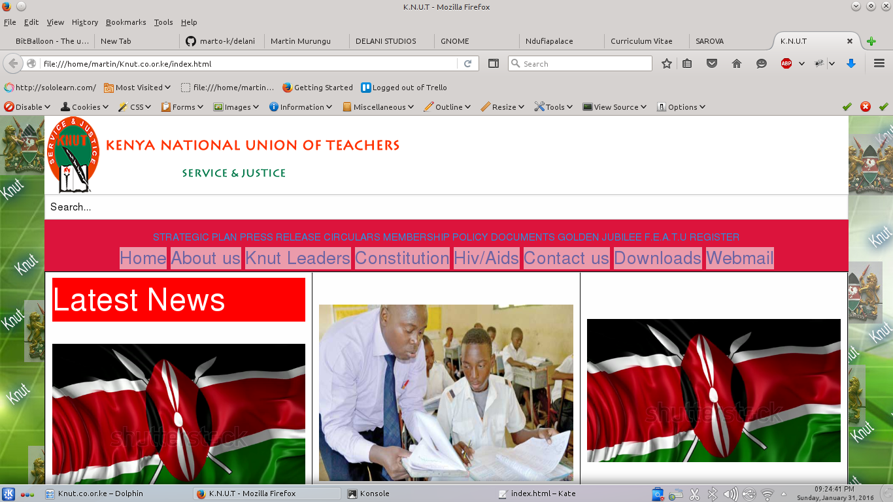
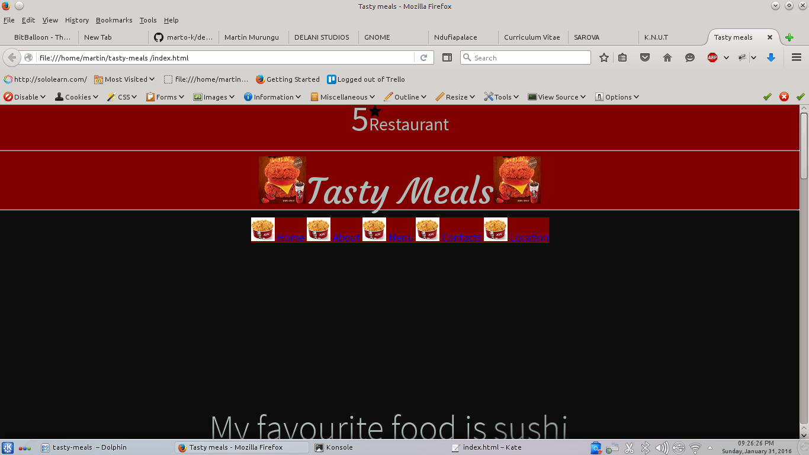

MY WEBSITES AND ANDROID APPLICATIONS
 This is a design website that shows houses and explains the designs.
 This is a website that shows the web designs made by developers and creates an easy way for new coders to access jobs.
 This is a marketing website for clothing fashions and their prices.
 This is a website privately owned by a group that does housing marketing businesses.It is a platform for connecting customers in need of looking at housing estates and gives way for customer buying of houses.It makes life easier for customers out there looking for housing estates and homes.
 It is a good place for giving developers out there ideas on how to create their own websites in order to improve their skills in front end developing of websites.
 This is my curriculum vitae.
 This is an improved version of kenya national examination council website that i created as a better option for the previous website that didnt have good credibility.
 This is a website for the restaurant named tasty meals.Here customers can order their meals online and also get their orders in good time and in their wished condition.